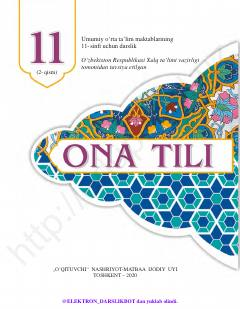

1O11-sinf o'quvchilari uchun mo'ljallangan ona tili fani darsligi.
Ushbu darslik umumiy o'rta ta'lim maktablarining 11-sinfi uchun mo'ljallangan bo'lib, ona tili fanidan talaffuz va imlo me'yorlari hamda nutqiy ko'nikmalarni rivojlantirishga qaratilgan mashqlarni o'z ichiga oladi. Kitobda o'zlashma so'zlar, tovush o'zgarishlari va ularning yozuvda aks etish qoidalari atroflicha tushuntirilgan.